第五章 定积分
如果说微分学是关于“局部变化率与微元分解”的学问，那么积分学则是关于“无限累加与整体合成”的科学. 定积分（Definite Integral）概念的建立，是人类数学史上最辉煌的飞跃之一. 它最初源于计算不规则平面图形的面积、立体体积以及变速运动的总位移，但其本质是某种特定形式的和式的极限. 本章将从曲边梯形面积的逼近过程出发，建立严格的定积分概念，深入剖析定积分的代数与几何性质；进而建立微积分发展史上最关键的里程碑——微积分基本公式（牛顿-莱布尼茨公式），揭示微分与积分之间互逆的内在规律；并系统讨论定积分的换元与分部算法、反常积分（广义积分）及其敛散性审敛法与 $\Gamma$ 函数.
第一节 定积分的概念与性质
一、定积分问题的引例
1. 曲边梯形的面积
在直角坐标系中，由连续曲线 $y = f(x)$ ($f(x) \ge 0$)、两条平行直线 $x = a, x = b$ 以及 $x$ 轴所围成的平面图形，称为曲边梯形（图 5-1）.
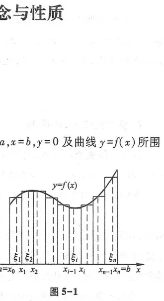
为了求出曲边梯形的面积 $A$，采用“以直代曲、无限细分”的四步经典算法：
- 分割：在区间 $[a, b]$ 中任意插入 $n-1$ 个分点：$a = x_0 < x_1 < x_2 < \dots < x_n = b$，将区间分成 $n$ 个小区间 $[x_{i-1}, x_i]$，其长度记为 $\Delta x_i = x_i - x_{i-1}$ ($i = 1, 2, \dots, n$). 记 $\lambda = \max_{1 \le i \le n} \{\Delta x_i\}$.
- 近似：在每个小区间 $[x_{i-1}, x_i]$ 上任取一点 $\xi_i \in [x_{i-1}, x_i]$，用以 $\Delta x_i$ 为底、高为 $f(\xi_i)$ 的窄矩形面积近似代替第 $i$ 个窄曲边梯形的面积（图 5-2）：$\Delta A_i \approx f(\xi_i)\Delta x_i$.
- 求和：曲边梯形总面积近似等于各窄矩形面积之和：$A \approx \sum_{i=1}^n f(\xi_i)\Delta x_i$.
- 取极限：令最大子区间长度 $\lambda \to 0$（此时分割数 $n \to \infty$），和式的极限即为曲边梯形的精确面积：$A = \lim_{\lambda \to 0} \sum_{i=1}^n f(\xi_i)\Delta x_i$.
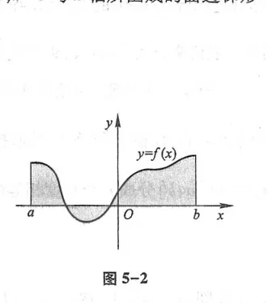
二、定积分的定义
设函数 $f(x)$ 在闭区间 $[a, b]$ 上有界. 在 $[a, b]$ 中任意插入分点 $a = x_0 < x_1 < \dots < x_n = b$，在每个小区间 $[x_{i-1}, x_i]$ 上任取一点 $\xi_i$，作和式：
$$I_n = \sum_{i=1}^n f(\xi_i)\Delta x_i$$
记 $\lambda = \max_{1 \le i \le n} \{\Delta x_i\}$. 如果当 $\lambda \to 0$ 时，不论对 $[a, b]$ 如何分割，也不论在小区间上点 $\xi_i$ 如何选取，和式的极限都存在且为同一个确定的常数 $I$，则称函数 $f(x)$ 在区间 $[a, b]$ 上可积（Integrable），并将此极限值 $I$ 称为函数 $f(x)$ 在区间 $[a, b]$ 上的定积分，记作：
$$\int_a^b f(x)dx = \lim_{\lambda \to 0} \sum_{i=1}^n f(\xi_i)\Delta x_i$$
其中 $a$ 称为积分下限，$b$ 称为积分上限，$[a, b]$ 称为积分区间.
可积充分条件：若函数 $f(x)$ 在 $[a, b]$ 上连续，或在 $[a, b]$ 上有界且只有有限个第一类间断点，则 $f(x)$ 在 $[a, b]$ 上必可积.
三、定积分的基本性质
- 线性性质：$\int_a^b [k_1 f(x) \pm k_2 g(x)]dx = k_1 \int_a^b f(x)dx \pm k_2 \int_a^b g(x)dx$
- 区间可加性：对任意三点 $a, b, c$，恒有 $\int_a^b f(x)dx = \int_a^c f(x)dx + \int_c^b f(x)dx$
- 保号性：若在 $[a, b]$ 上 $f(x) \ge 0$，则 $\int_a^b f(x)dx \ge 0$；特别地，若 $f(x) \le g(x)$，则 $\int_a^b f(x)dx \le \int_a^b g(x)dx$
- 绝对值不等式：$\left|\int_a^b f(x)dx\right| \le \int_a^b |f(x)|dx$
如果函数 $f(x)$ 在闭区间 $[a, b]$ 上连续，则在积分区间 $[a, b]$ 上至少存在一点 $\xi \in [a, b]$，使得：
$$\int_a^b f(x)dx = f(\xi)(b - a)$$
几何意义：曲边梯形的面积等于以区间长 $(b - a)$ 为底、以平均高度 $f(\xi)$ 为高的等面积矩形（图 5-3、图 5-4）.
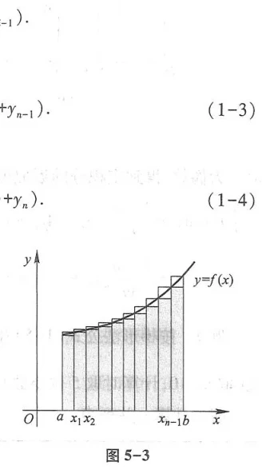
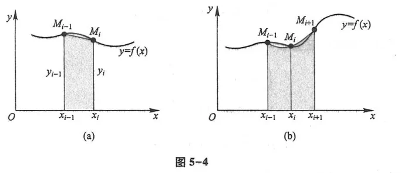
第二节 微积分基本公式
一、积分上限的函数及其导数
设函数 $f(x)$ 在 $[a, b]$ 上连续. 如果将定积分的上限变为变量 $x \in [a, b]$，则定积分定义了一个新的函数：
$$\Phi(x) = \int_a^x f(t)dt \quad (a \le x \le b)$$
称为变上限积分函数（图 5-5）.
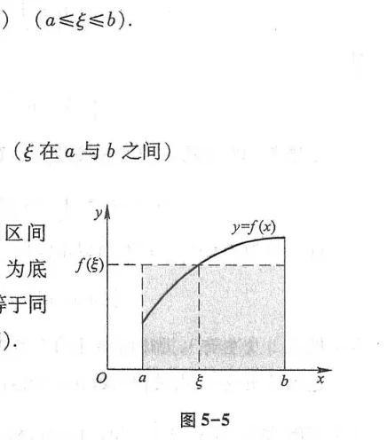
如果函数 $f(x)$ 在区间 $[a, b]$ 上连续，则变上限积分 $\Phi(x) = \int_a^x f(t)dt$ 在 $[a, b]$ 上处处可导，且其导数等于被积函数在上限处的值：
$$\Phi'(x) = \frac{d}{dx}\left[\int_a^x f(t)dt\right] = f(x)$$
重要推论：连续函数 $f(x)$ 的原函数一定存在，$\Phi(x)$ 就是 $f(x)$ 的一个原函数. 这彻底确立了原函数存在定理.
复合上限求导链式法则：若积分限为可导函数，则：
$$\frac{d}{dx}\left[\int_{\psi(x)}^{\varphi(x)} f(t)dt\right] = f(\varphi(x))\varphi'(x) - f(\psi(x))\psi'(x)$$
二、牛顿-莱布尼茨公式
如果函数 $F(x)$ 是连续函数 $f(x)$ 在区间 $[a, b]$ 上的任意一个原函数，则：
$$\int_a^b f(x)dx = F(b) - F(a) = [F(x)]_a^b$$
这个公式将求和式的极限（定积分）直接转化为求被积函数的原函数，在微分与积分之间架起了宏伟的金门大桥，彻底解放了微积分的计算力！
第三节 定积分的换元法和分部积分法
一、定积分的换元法
设函数 $f(x)$ 在区间 $[a, b]$ 上连续，变换 $x = \varphi(t)$ 满足：
- $\varphi(\alpha) = a, \varphi(\beta) = b$；
- $\varphi(t)$ 在闭区间 $[\alpha, \beta]$（或 $[\beta, \alpha]$）上具有连续导数，且其值域在 $[a, b]$ 内；
则恒有：
$$\int_a^b f(x)dx = \int_\alpha^\beta f(\varphi(t))\varphi'(t)dt$$
特别提醒：定积分换元必须同步改变积分上下限，换限后直接按新变量计算定值，绝不需要再回代原变量！
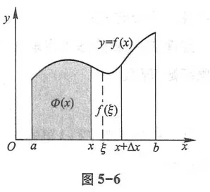
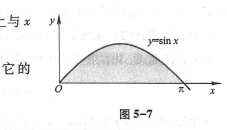
二、定积分的分部积分法
若 $u(x), v(x)$ 在 $[a, b]$ 上具有连续导数，则：
$$\int_a^b u(x)v'(x)dx = [u(x)v(x)]_a^b - \int_a^b v(x)u'(x)dx$$
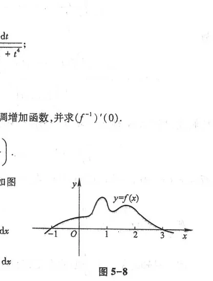
华里斯公式（点火公式 Wallis Formula）：
$$I_n = \int_0^{\frac{\pi}{2}} \sin^n x dx = \int_0^{\frac{\pi}{2}} \cos^n x dx = \begin{cases} \frac{n-1}{n} \cdot \frac{n-3}{n-2} \dots \frac{1}{2} \cdot \frac{\pi}{2}, & (n \text{ 为正偶数}) \\ \frac{n-1}{n} \cdot \frac{n-3}{n-2} \dots \frac{2}{3} \cdot 1, & (n \text{ 为大于 1 的奇数}) \end{cases}$$
第四节 反常积分
一、无穷限的反常积分
当积分区间延伸到无穷大时，定义为有限区间积分的极限（图 5-9）：
$$\int_a^{+\infty} f(x)dx = \lim_{b \to +\infty} \int_a^b f(x)dx, \qquad \int_{-\infty}^b f(x)dx = \lim_{a \to -\infty} \int_a^b f(x)dx$$
若极限存在，称该反常积分收敛；若极限不存在，称反常积分发散.
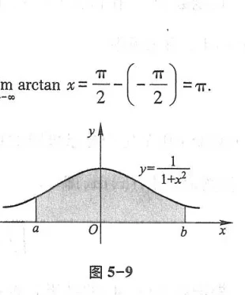
基准 $p$-积分：$\int_1^{+\infty} \frac{dx}{x^p}$，当 $p > 1$ 时收敛，其值为 $\frac{1}{p-1}$；当 $p \le 1$ 时发散.
二、无界函数的反常积分（瑕积分）
如果被积函数在区间端点 $a$ 处趋于无穷大（称 $a$ 为瑕点），其反常积分定义为（图 5-10）：
$$\int_a^b f(x)dx = \lim_{\varepsilon \to 0^+} \int_{a + \varepsilon}^b f(x)dx$$
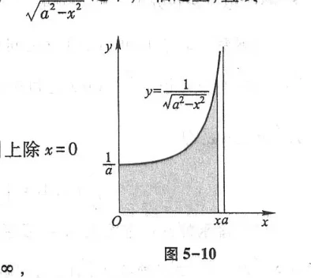
基准瑕积分：$\int_a^b \frac{dx}{(x - a)^q}$，当 $q < 1$ 时收敛；当 $q \ge 1$ 时发散.
第五节 反常积分的审敛法 $\Gamma$ 函数
一、非负反常积分比较审敛法
设对所有 $x \in [a, +\infty)$，有 $0 \le f(x) \le g(x)$：
- 若 $\int_a^{+\infty} g(x)dx$ 收敛，则 $\int_a^{+\infty} f(x)dx$ 必收敛；
- 若 $\int_a^{+\infty} f(x)dx$ 发散，则 $\int_a^{+\infty} g(x)dx$ 必发散.
二、$\Gamma$ 函数（欧拉第二积分）
含参变量的反常积分：
$$\Gamma(\alpha) = \int_0^{+\infty} x^{\alpha - 1} e^{-x} dx \quad (\alpha > 0)$$
称为伽马函数（图 5-11）.
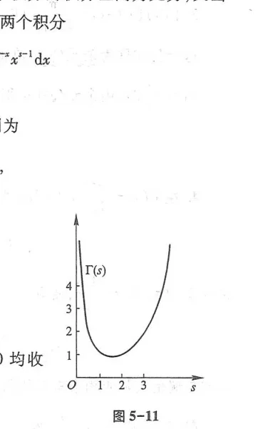
$\Gamma$ 函数的核心性质：
- 递推公式：$\Gamma(\alpha + 1) = \alpha \Gamma(\alpha)$；
- 阶乘推广：当 $n$ 为正整数时，$\Gamma(n + 1) = n!$；
- 特殊值：$\Gamma(1) = 1, \quad \Gamma\left(\frac{1}{2}\right) = \sqrt{\pi}$.
总习题五
1. 计算导数：$\frac{d}{dx}\left[\int_0^{x^2} \sqrt{1 + t^2}dt\right]$.
解：应用变上限复合求导公式：$\sqrt{1 + (x^2)^2} \cdot (x^2)' = 2x\sqrt{1 + x^4}$.
2. 计算定积分：$I = \int_0^1 x \arctan x dx$.
解：分部积分法：
$I = \int_0^1 \arctan x d\left(\frac{x^2}{2}\right) = \left[\frac{x^2}{2}\arctan x\right]_0^1 - \frac{1}{2}\int_0^1 \frac{x^2}{1 + x^2}dx$
$= \frac{1}{2}\cdot\frac{\pi}{4} - \frac{1}{2}\int_0^1 \left(1 - \frac{1}{1 + x^2}\right)dx = \frac{\pi}{8} - \frac{1}{2}[x - \arctan x]_0^1 = \frac{\pi}{8} - \frac{1}{2}\left(1 - \frac{\pi}{4}\right) = \frac{\pi}{4} - \frac{1}{2}$.
3. 计算反常积分：$I = \int_0^{+\infty} x e^{-x} dx$.
解：由 $\Gamma$ 函数定义，$I = \Gamma(2) = 1! = 1$；或分部积分：
$\int_0^{+\infty} x d(-e^{-x}) = [-x e^{-x}]_0^{+\infty} + \int_0^{+\infty} e^{-x}dx = 0 + [-e^{-x}]_0^{+\infty} = 1$.